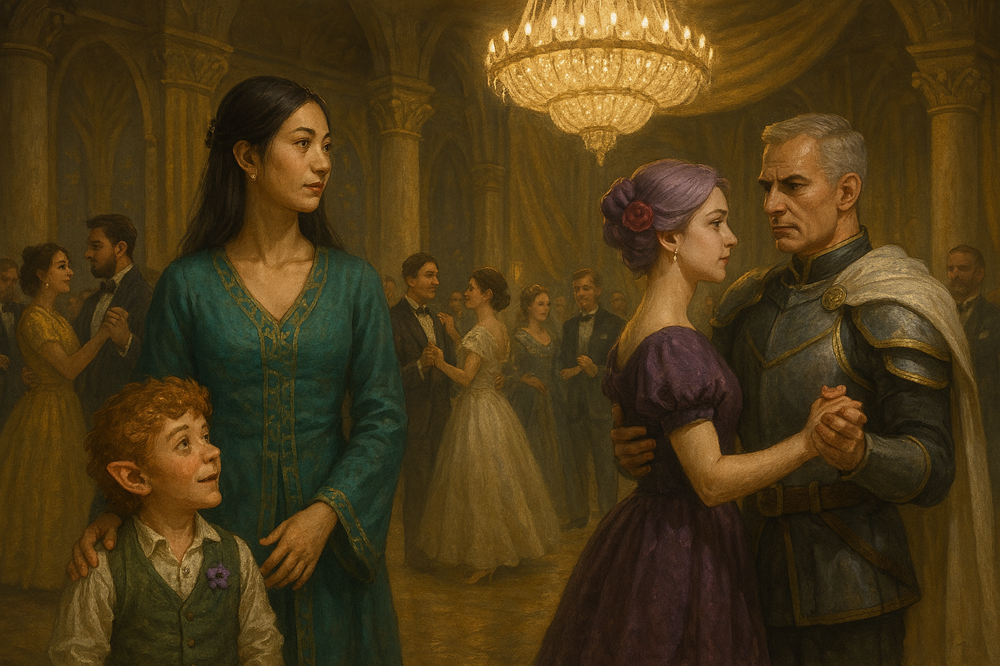

Chapter 3: Upper Class Life
The Blooming of Macksohn

The Blooming of Macksohn
15048.11.10
日出，住在雙人房的 YHWH 和 Paladin 在反覆起床幾次後，最終決定繼續昏頭大睡。
Samael 在睡醒後等待還在熟睡的酷爆，繼續待在房間內。
早起的 Midori 在大廳坐著等待大家，唯一等到的是 Ron。兩人走到旅店外的噴水池旁談天，後來決定趁早到王宮附近繞繞。
來到王宮花園的入口，兩人思索著要不要進去。花園內盡是打扮華貴的貴族，穿著簡單的 Ron 只好跟在正裝的 Midori 身後，悄悄進入花園。
Midori 一進入花園，便與一名年輕女子對上眼。對方自我介紹為 Roline，是 Hughes 家族的新任掌門人。他也介紹自己家族是經商的。Midori 則自稱是來自方努爾市的 Midori。簡單探聽後，Midori 得知比武大賽的參賽者似乎會被先帶去進行「處理」後才會進入會場。而貴族們則會從花園深處緊鎖的大門進入，逐步往下，進入一個地下空間，觀賞比賽。在 Ron 感到花園內各種華麗穿著的人們讓他感到的格格不入後，Midori 和 Ron 兩人便和 Roline 道別，而 Roline 也很期待在隔天 Berners 家的晚宴與 Midori 再次相見。
離開花園後，Midori 和 Ron 兩人躲到角落，盤算著繞著王宮，進行探索，卻遠遠的看見 Flaerry 爵士夫妻從花園門口走出，朝著市集走去。在討論後，Midori 和 Ron 前去和爵士夫妻會面。在四人拉到旁邊私下談話中，他們得知爵士夫妻在冒險團被衛兵抓走的那天似乎因為有別的重要事情而不在家，甚至連衛兵來到 Korringfield 他們都不知情。不過在大家消失後，Flaerry 爵士有和 Magnus 爵士打聽了一下消息，但 Magnus 爵士似乎沒有告知 Flaerry 爵士關於大家前往 Macksohn 一事。大家談到麥克嵩的紫羅蘭是 Paladin 的生母一事時，Flaerry 爵士似乎早已知情，而 Rosa 夫人則完全不知道。在 Midori 的請託下，爵士答應會嘗試在明晚的晚宴上為大家和紫羅蘭牽線，也會幫忙打聽 Jiaheng 的下落，不過爵士也告知 Midori 和 Ron，Jiaheng 很有可能狀況很糟，回不到從前的樣子了。另外，爵士也告訴 Midori 他剛才認識的 Hughes 家族是與外地交易稀有材料的家族，過去的掌門人應是 Fred Hughes。
在與爵士夫婦道別後，Ron 便前往 Sunrise 去了。Ron 進到 Sunrise 時，看見門邊的 Glen，告知他自己決定離開 Sunrise，去別的店工作，但是有需要可以到他在 White Brick 的房間找他談事。說到一半，Ron 發現忙不來的 Frankie 從廚房走了出來。Ron 落下了狠話，表明自己要離開了，便快速離開。
同時，Midori 回到了 White Brick。在大廳等待夥伴們的他與櫃檯兩名服務生 Clark 與 Kess 談天。Midori 打聽了一下關於 Stefano 的消息，他似乎是個很得客人心的酒保。另外 Midori 也詢問了關於曾經從 The Gates Inn 老闆 Kevin 那打聽到，能詢問情報的神秘地址。Kess 表示自己曾經去過，花了點錢，問到了自己想知道的事情，似乎十分滿意。Kess 說他下午兩點左右輪班，可以帶 Midori 去，但 Midori 因為上次去的經驗不好，似乎想要讓 Kess 帶自己的夥伴過去，同時大家也約好了中午要一起練團，時間上也很難搭配。
在 Midori 與 Kess 的談話過程中，Samael 出現了，強烈地吸引了 Kess 的注意力。像個小腦粉似的，Kess 充分表達了對 Samael 的興趣，但在 Midori 推薦 Kess 可以帶 Samael 去能詢問情報的地方後，Samael 一樣以練團的時程而婉拒了。
Midori 與 Samael 一同到樓上敲了敲 Paladin 和 YHWH 的房門，好一段時間，兩人終於起床。簡單梳洗準備好後，大家一起到一樓大廳，直到 Brock 出現，大家便一同前往 Patton’s 先去找 Mr. Moon。Mr. Moon 陪同著大家一起來到 Berners 宅邸，經過同意，僕人引導大家到了前一天大家參觀的宴會廳練團。
離開 Sunrise 後，Ron 回到了王宮花園，躡手躡腳的翻過了花園的圍籬，喬裝成要尋找遺失的鑰匙，趁機跑去調查從 Roline 那兒打聽，進入比武大會比賽會場的入口，卻發現因為難以調查，只好作罷。
在廣場市集，Ron 簡單吃了個沙威瑪後，便前往市集外圍的比武大賽報名處。經過詢問後，Ron 得知了比武大賽的冠軍將被賜予爵位，甚至會有領土，心動的他決定以「尖頂寺的 Ron」為名報名了。
回到 White Brick 後，Ron 在自己房間門縫發現了一張紙條，是櫃台留下的，表示有位醫生曾來找過他，晚點會再來一趟。Ron 便決定到大廳打坐，等待 Dr. David。等了不知道多久，Dr. David 終於來到，兩人在 Ron 房間簡單討論後，便出發了。
在大家討論下，荒野旋律最終決定彈奏幾首曲子：《Voice of Mattington》（Brock 表示這是在 Macksohn 常聽到的曲子，甚至在整個 Mattington 王國都能常常聽到）、前一天在劇場學習的社交舞曲、《The Violet of Macksohn》（Paladin 憶起他父親在他小時候常唱給他聽的歌，經 Brock 確認後，才知道曲名），以及改編自 Samael 將冒險團冒險過程集結而成的史詩《The Song of Vowalon》。在充分練習與 Mr. Moon 的肯定下，大家便收工，到 Patton’s 拿了自己的物品後便離開了。
在 Brock 的帶領下，大家來到了距離 Sunrise 不遠的一家小酒館 Nightfall。Brock 表示這是他過去曾經演奏過的地方，因此想讓大家認識一下，不過食物和酒不怎麼好吃。大家聽著舞台上魯特琴自彈自唱的男子，喝著酒，不自覺地發現角落坐著個披著黑色斗篷的男子，目光直盯著大家。Midori 和 YHWH 決定先到酒館正門口堵住，Samael、Paladin 和 Brock 三人則慢慢朝向那人走去，但在距離那人一桌的距離時，Brock 卻突然揮出雙拳，幸好 Samael 和 Paladin 即時閃過。Paladin 疾步向前，卻發現斗篷男子竟然如幻象般的消失了，而酒館的後門也被悄悄推開，隨即關上。Brock 則突然一個踉蹌，趴倒昏迷在地。眾人趕緊向酒館的工作人員求助，彈奏魯特琴的男子自願去找醫生過來。Brock 透過心靈感應，告訴 Paladin 不要理他，他們還有更重要的事要做。在醫生來到店內後，確認 Brock 身上沒有明顯外傷，但身體冰冷。眾人決議將 Brock 搬到醫生的診間。
Samael 和 YHWH 留下來守護 Brock，Midori 和 Paladin 則先回 White Brick 休息，醫生也先行離去。守夜過程中，YHWH 感應到診所的門外似乎有股異樣的魔力，於是他向門外射了三發魔法飛彈，打穿了木門，好像也擊中了什麼。YHWH 也發現 Brock 的眼睛似乎有辦法張開，因此簡單的問了他狀況是否還穩定。換班給 Samael 守夜時，也沒有發生任何怪異的事。
在崔尼斯劇院附近，Ron 和 Dr. David 停在了一間天藍色調的餐廳門口，店名是 Edmond’s Diner。Ron 回想起曾經在 Wescoe 見過這間餐廳。Dr. David 表示 Wescoe 的是本店，這裡的是分店。兩人享用了店內的餐點後，便在服務生的帶領下到了廚房後的一間小小會客室，與店長 Lewis 簡單談話。Lewis 在簡單了解了 Ron 的背景後，便帶 Ron 逛了一下廚房，接著表示在關店前，再請 Ron 來廚房試個手藝，順利的話，明日就可以上工。
因為時間還早，Ron 離開餐廳後，先到了崔尼斯劇院逛逛。售票亭目前沒有人，Ron 便和售票亭的工作人員詢問了關於比武大會的細節，確認了大會是由王宮主辦，貴族基本上不插手。另外，工作人員也推薦了 Ron 明天晚上七點有個外地來的特技表演：Simon’s 雜技團，歡迎他來觀賞。他表示自己叫 Nathaniel，明天購票時報上他的名字，可以有點優惠。
離開劇院後，Ron 在街上尋找外地來的潛在比武大會選手，想打聽點消息。他看見了一名壯碩的半獸人，便前往搭話。半獸人買了杯啤酒給 Ron，兩人閒聊起來。他表示自己的名字叫 Gregory the Axe，過去幾年都有來參加比武大會，十分喜歡。Gregory 讓 Ron 使力在他的胸膛揍了一拳，認定十分有力。Gregory 也拿出他掛在身後的斧頭，讓 Ron 拿拿看，Ron 卻在接手後因為斧頭太重而蹲坐在地上。Gregory 說明這把斧頭叫 Magnet，已經準備好在比武大會上好好展現了。Ron 向 Gregory 詢問未來可以去哪裡找他，Gregory 則表示自己今天剛到，還沒找好旅店，但過去幾次來這裡都是住一家 Brandon’s Corner。
和 Gregory 簡單道別後，Ron 看見了一個熟悉的身影，Cena。他前去打了個招呼，Cena 與身邊的 Beatrice 也十分友善。Cena 提到了會去參加明日 Berners 家的宴會，而他現在似乎也過得很好，打算在麥克嵩度過他的下半輩子了。在 Ron 眼中，Cena 似乎已經真的像個貴族一樣了。
時間晚了，Ron 回到 Edmond’s Diner，在店員的協助下來到了 Lewis 辦公室外。Ron 清楚地聽見了 Dr. David 和 Lewis 的談話，Dr. David 表示雖然肯定 Ron 的能力，但 Sunrise 在他來了後便發生了大事，著實讓他有點不好的預兆。Lewis 也表示自己有點擔心，但又不好意思這樣讓 Ron 沒有機會來工作。門外的 Ron 對此陷入了沉思，也不方便直接打擾辦公室內的兩位。
進入辦公室後，Ron 向 Dr. David 和 Lewis 表示自己也許不適合這份工作，打算放棄這個機會，但是在兩人的考慮下，最後還是邀請 Ron 幫一個忙：隔天餐廳有要在 Berners 家族的晚宴提供餐點，Lewis 便邀請 Ron 一起將餐點運送到 Berners 宅邸，並在晚宴上協助擔任服務生。
離開 Edmond’s Diner 後，Ron 有些失落，但又還算平靜，Dr. David 伴著他，一路默默走回 White Brick。
15048.11.11
凌晨，Midori 和 Paladin 休息足夠後，便從 White Brick 出發往診所交班。Midori 陪著 Samael 回了 White Brick 一趟，將身上的物品備齊，也帶上還在熟睡中的酷爆。診所內的 Paladin 也用椅子將門口堵住，以防有人闖入。回到診所門口，Samael 撿到了一塊黑色的碎布，但沒有概念這是什麼東西，因此只能先收著。
天亮後，醫生回到診所，Brock 一樣癱瘓，因此眾人決定先將他帶到 Patton’s，尋求 Mr. Moon 的協助。醫生提供了他們一個簡易擔架，而 Midori 也給了醫生一枚金幣作為答謝。
Mr. Moon 在見到荒野旋律後，決定帶大家去 Brock 的家。大家扛著擔架，走到了城市較貧窮的區域。Mr. Moon 在其中一間房子敲了敲門，一名中老年的半獸人女子開了門，引了大家進入。Brock 的父母瞭解了 Brock 的現況後也感到無能為力，Mr. Moon 則從腰際掏出了一個大布袋，交給他們，裡面似乎是錢幣。Mr. Moon 表示希望能讓他們生活過得好一些。Brock 的父親也提前祝荒野旋律今日的表演順利。
Ron 一早便決定出發前往之前聽說的神秘小黑屋打聽消息。按照地址，他找到了一間破舊的小屋子，也隨著光源走到了地下室。辦公桌前披著斗篷的身影似乎等待著 Ron 的到來。Ron 掏出了 10 枚金幣，詢問了 Sunrise 的前老闆 Jonathan 現在的去處，得到了「Jonathan 現在已經不在麥克嵩了」的回應，他又掏出 1 枚金幣，想詢問更細節的地點，卻得到了模糊的答案，因此作罷，離開了房子，在城門口買了沙威瑪後，便回 White Brick 休息。
Mr. Moon 帶著大家回到昨日事發的 Nightfall 用餐，簡單了解事發狀況。Samael 掏出在診所門口發現的破布，Mr. Moon 則提到王宮內有一座圖書館，也許可以去查查資料。
在 Mr. Moon 的帶領下，大家來到了王宮花園深處圖書館的入口。兩名守衛詢問大家是哪裡來的，Midori 表示 YHWH 是來自陶拉里亞大學院的 Tai 教授，其他人則是他的助理，Tai 教授是研究音樂的學者，要來這裡查閱資料。經過討論後，守衛決定讓大家進入。
在圖書館內，花了一些時間，大家針對撿到的黑布，從各種方向探索，最終得知這種可以隱形的黑色布料，是取下一種叫「拉茲特獸」身上的毛皮，泡水後用拉索斯語的咒語製成的布料。雖然線索有限，但至少大家知道這東西確實和拉索斯教有所關聯。
離開圖書館後，Mr. Moon 表示他要再去見一下 Brock 的父母，而冒險團則出發前往 Berners 宅邸。在 Berners 僕人的帶領下，大家回到了宴會廳開始準備練習，同時宅邸內的僕人們也已經在準備宴會的食物了。在大家調音時，發現另外一個樂團的人也來了。荒野旋律的團員們率先演奏了麥克嵩的社交舞曲，另一個樂團則回敬了一首他們沒聽過的樂曲，十分好聽。兩團互相打了招呼。這個樂團叫「林中之聲」，有四名團員，都是人類，包含主唱團長 Tony、打擊樂手 Gabriel、魯特琴手 Samuel，以及另一名魯特琴手 Danitha。
在經過多次練習後，荒野旋律決定先休息一下。宅邸的僕人也向樂團告知，今晚會請他們演奏到社交舞的舞曲，下半段會交給林中之聲樂團，而荒野旋律便可四處逛逛。Samael 偷偷觀察了林中之聲的團體互動，發現團長 Tony 似乎有在刻意向團內的兩名女團員 Gabriel 以及 Danitha 調情，而剩下的男團員 Samuel 好像很不是滋味。
下午時間，Ron 回到了 Edmond’s Diner。Lewis 向他介紹了其中一名壯碩的員工 Michael，Michael 也帶領著 Ron 開始準備把餐點向外搬運。Edmond’s Diner 的員工花了不少時間，終於把餐點都送到 Berners 宅邸，並從後門的通道將餐點都送進宴會廳內。利用最後的時間，大家簡單休息後，便換裝準備迎接賓客。
在賓客入場前，荒野旋律便開始演奏。陸陸續續，有來自各方的貴族人士來到會場，談天、喝酒，吃著美食。眾人從遠方看見了 Cena 的身影，Paladin 決定放下樂器，從人群中鑽了過去找 Cena 對峙，卻遭到 Cena 假裝不認識，於是喪氣的回到了樂團繼續表演。
另一方面，Ron 端著裝滿點心的托盤，為貴族們送上點心。他從遠方看見了 Roline，也將餐點送了過去。後來 Ron 也見到了 Flaerry 爵士夫婦，以及 Cena 和 Beatrice。經過對談，Ron 得知 Beatrice 是麥克嵩的貴族家庭 Eden 家的繼承人。
在彈奏了《沃瓦倫之歌》後，荒野旋律前站滿了觀眾，大家對於這首沒聽過的歌曲十分有興趣。一名自稱是 Franz 的吟遊詩人好奇地向樂團請教，也希望能將這首歌的故事改編成自己的曲子，四處表演。Samael 也和 Franz 約定好在宴會結束後找機會到酒館好好聊聊。
在 Franz 離開樂團後，一名身穿正裝的男子找上了他。他自稱是 LaVinci（實為喬裝的 Sha’Doom），在麥克嵩經營各種事務的專業人士，希望能邀請 Franz 和荒野旋律合作，一起在幾天後的比武大會上演出。他伸出他的手，大力的和 Franz 握手，似乎有點讓 Franz 嚇著了。Franz 表示自己再想想，有機會也許可以合作。
Roline 來到了樂團前，見到 Midori 非常開心。Midori 藉此暫時離開樂團，和 Roline 四處晃晃。
在團長 Samael 的決議下，樂團剩餘的成員決定開始演奏起社交舞曲。隨著音樂響起，不少貴賓來到了會場中間，雙雙跳起了社交舞。Midori 和 Roline 也配對了起來，十分開心。（LaVinci 自己在舞池角落獨自跳起了舞蹈，不過似乎沒有人在注意他。）而在交換舞伴後，Midori 便離開了新配對到的陌生男子，回到了樂團中。
在舞曲進行一段時間後，門口響起了敲杯子的聲音。大門敞開，Berners 一家，包含 Jefferey、Ona、Lance，以及 Selene 都走入了會場。跟在他們身後的，是穿著華貴紫衣的紫羅蘭，以及一名穿著軍裝的壯碩男子，護衛著他。荒野旋律隨即改演奏了《麥克嵩的紫羅蘭》，試圖引起紫羅蘭的興趣。然而，此刻會場一半的人靠了過來聆聽，另一半的人則朝向紫羅蘭的方向湧去。
在樂曲結束後，LaVinci 朝荒野旋律靠了過去，想邀請他們參與表演。在 Samael 試圖推託的過程中，整個下午都沒出現的 Mr. Moon 用了抓了 LaVinci 的肩膀，表示自己是荒野旋律的經紀人。他將 LaVinci 拖到一旁，語帶威脅地要他不准動他的客戶。慌忙離開的 LaVinci 逃往男廁，花了些時間喬裝成一名年輕女子後，便從廁所鑽了出來。
另一方面，隨著林中之聲接替演出，荒野旋律的團員們也下了崗，先到廁所簡單清洗後便回到宴會場。會場內，他們看見 Flaerry 爵士夫婦正在一旁談天，思索著要不要去打個招呼。
眾人決定去觀賞林中之聲的演奏。然而，有個熟悉的身影邁向 Midori，並搭著了他的肩，是 Gate’s Inn 的 Kevin Bolden。他先向 Midori 道了歉，並表示自己有點東西要給 Midori。首先，他拿出了條手帕，上面有 Midori 熟悉的護盾符號，也就是津菈教的符號。手帕上還有糊掉的墨水字跡，那字跡 Midori 似乎很久、很久以前見過，在和這群夥伴見面前就認得的字跡。另外，Kevin 又掏出了一個項鍊，中間掛著一顆像是珍珠的寶石。Midori 收下並戴上後，Kevin 才表示這是他家裡的珍寶之一，請 Midori 別太在意。接著，Kevin 便瀟灑的離去了。眾人也繼續前往他們原本的目標前進：林中之聲的演奏。
一名麥克嵩當地的貴族也來到了會場。外貌十分帥氣的 Xavier 雖然不清楚自己是怎麼來到這裡的，但他似乎十分喜歡這個地方。滿滿的人，滿滿的食物，滿滿的……新奇。看著樂團演奏，好奇的 Xavier 站在樂團的正前方，距離主唱不到 30 公分的距離。他開心地跟著哼著歌，詢問著各種樂器，但樂團似乎不太想理會他。在失去興致後，Xavier 便跑到了食物區。
端著餐盤的 Ron 走向了紫羅蘭以及將軍，就近觀察了一下兩人。兩人拿走了點心後，Ron 便離開了。
YHWH 在窗邊找到了 Mr. Moon，簡單聊了天後，兩人一起去拿了幾杯酒。YHWH 向 Mr. Moon 問起了關於月神教的問題，而 Mr. Moon 表示 Paladin 左耳留下的印記聽說是可以消除的，但是他不認識有誰有這樣的能力。另外，他也表示自己的教派是屬於月神教中較為溫和的教派，只想融入人群之中，沒有想要高調過生活。
見過了林中之聲的團長 Tony 似乎對女團員不太禮貌的行為後，「渣男殺手」Samael 和夥伴們決定行使他們心中的正義。和歸來的 YHWH 簡單討論好計策後，YHWH 在樂團結束一首樂曲後，在 Tony 旁邊利用幻象製造了一個年輕的金髮美女貴族，對著 Tony 拋媚眼，勾引他離開。Tony 馬上就拋下了他的團員們，喊著中場休息，並跟著「女子」走了。利用這個機會，Samael 透過音樂盒蠱惑了 Tony，告訴他有個美麗的女子名為紫羅蘭，想邀請 Tony 去認識認識。盲目的 Tony 順著 Samael 的引導，走向了會場另一側的紫羅蘭。他大方的伸出他的手，邀請紫羅蘭共舞，態度十分不敬。紫羅蘭皺眉問他是誰，他則表示自己是 Tony，T、O、N、Y。紫羅蘭似乎十分不屑，轉身想離去，身邊的將軍則將自己擋在紫羅蘭與 Tony 之間。Samael 慫恿 Tony 繼續追求，而像個醉漢一樣的 Tony 追了上去，被跟在後方的 YHWH 電擊了兩下，便跪倒在地。將軍便指示了傭人將他抬離會場。
此時，Midori 回到了林中之聲的樂團前，和剩下的團員談天。他表示自己可以充當原本 Tony 的位置，而且他也有首歌，似乎是現場有個觀眾想點播，送給會場的某位龍人聽的。於是 Midori 便拿起他的提琴，演唱了「Dragon Baby」。雖然風格和其他曲子不太一樣，但觀眾們似乎也還挺捧場的。
終於有了可以和紫羅蘭對話的機會。Samael 和 YHWH 簡單和紫羅蘭互相介紹了自己，也得知身邊的將軍便是 Berners 家的長子 Gary Berners，現在擔任王宮禁衛軍的隊長，也就是 Syr Flaerry 的繼承者。接著，兩人便把身後的 Paladin 推了出來。看見 Paladin，紫羅蘭臉色有了點變化。前幾天他才在城門口見到了這名號稱是他兒子的半身人，怎麼現在又到了這會場？Paladin 支支吾吾，試著想證明自己是紫羅蘭的兒子，卻又想不出什麼證據。在 Samael 靈機一動下，決定去請 Syr Flaerry 與夫人前來解圍。
此時，一旁一名將帽緣壓得很低的奇異男子向 Berners 將軍靠了過來，打了聲招呼，表是自己是從遠方城市來的一名貴族，名叫 Nick Pan。接著，他微微掀起帽子，露出他的短角，似乎引起了 Berners 將軍的好奇心。神秘的 Nick 笑了笑，便和將軍揮手道別，繼續在人群中觀察這齣好戲。
Syr Flaerry 和夫人隨著 Samael 與 YHWH 的陪伴來到了現場。Syr Flaerry 向紫羅蘭說明了自己確信 Paladin 是 Syr Magnus 的孩子，而就算紫羅蘭不相信 Paladin 是他的兒子，也不要錯怪善良的 Paladin。看見紫羅蘭似乎還是沒有完全確認，Syr Flaerry 將他拉到一旁，好像開始了有點激烈的爭辯。
看著爵士和紫羅蘭爭辯中，Samael 等人試著和 Berners 將軍搭話，詢問了 Syr Flaerry 擔任隊長時期的事，包含了 Paladin 的父親，當時的副團長 Syr Magnus 當時是怎麼會被退役的。Berners 將軍表示，Syr Magnus 在巡邏時被一群暴徒襲擊，腳似乎就廢了。爵士夫人看見爵士爭論得有點久，決定去關心一下，便把討論結束的兩人帶了回來。
Syr Flaerry 語重心長地看著 Paladin，說道，為了 Paladin，他放棄了自己的爵位，作為交涉，讓紫羅蘭承認 Paladin 是自己的兒子。雖然不清楚這「交易」是怎麼進行的，Paladin 也點了點頭接受了。和大家點頭致意後，Syr Flaerry 便瀟灑地拉著他太太的手，離開了會場。
Paladin 看著自己的母親，尷尬卻不失禮節的詢問了未來自己該如何稱呼他？紫羅蘭表示叫他媽媽、母親都好，但他也表示自己可以幫到他，卻不一定能幫到他的夥伴。Paladin 也向紫羅蘭詢問了能否解救他的夥伴 Jiaheng？紫羅蘭表示自己對「沃瓦倫的惡魔」這名號其實沒有很在意，但如果要救被關在獄中的 Jiaheng，得直接去找國王，從他這裡沒辦法解決這件事。經過 Paladin 的詢問，紫羅蘭從禮服取下了一個紫羅蘭造型的別針，別在 Paladin 的胸前，像個護身符，也像個識別一樣。最後，紫羅蘭表示要 Paladin 好好享受今晚的派對，便離去了。
美食區內，好奇的 Xavier 看見了一大缸的牛排，準備整缸端走，遭到了剛好在旁邊的 Ron 制止。Ron 一步一步教導似乎沒什麼生活能力的 Xavier 要用盤子一次裝一份牛排，而不是一次拿走一缸。Xavier 似乎理解了，便拿了一份牛排開始享用。接著，他看見了旁邊還有生菜，便拿了些生菜，擦拭自己滿是牛排醬汁的臉。不久後，看見一旁各式的酒類，Xavier 索性用他的指頭挖了挖酒來喝，味道似乎和想像中的不太一樣，有點……鹹？各種口味挖過後，他才意識到似乎是自己手上的牛排醬汁味道染到了酒內。
「喝」了酒後的 Xavier 拿起盤子開始裝點心。一個、一個裝上去，他沒有注意到點心已經多到要裝不下了。隨著掉落的點心，他想接住，卻掉了更多點心在地上，於是他便索性的坐在地上開始吃點心。吃到一半，肚子感覺飽了，Xavier 站起身來卻覺得肚子發出奇怪的叫聲。是上廁所的時間了。離開宴會廳，Xavier 忘記廁所在哪一側，向右手邊走，一路走到底，卻發現那邊是出口。回頭走，經過會場入口，他想了想，自己剛剛為什麼要走出會場？於是他便走回了宴會內，肚子的不適似乎忍了下來。他終究沒走到廁所內。
拿著托盤，Ron 再次見到了 Roline。Roline 開玩笑地詢問 Ron 和 Midori 之間的關係，以及 Midori 是否有男友或老公。Ron 似乎隱約的察覺了 Roline 些微的情愫，表示 Midori 似乎有非常在意的人，但是他並不清楚。接著他便拉 Roline 一起去找 Midori。
在林中之聲前，Midori 遇見了一名金髮女子，並介紹自己為 LeAmes JaBron。女子介紹自己叫 Anya LaVinci，有一名酷愛握手的哥哥。假冒為 Anya 的 Sha’Doom 和 Midori 攀談著，看見了遠方有個龍人揮著手，大叫 Midori。Midori 假裝自己不認識那人，繼續和 Anya 聊天。
看見 Midori 似乎和別的女子聊天，Roline 有些落寞，和 Ron 退到了一旁，用微笑掩蓋心中複雜的情緒，接著他便和 Ron 道別。
回到了林中之聲前，Xavier 再次好奇的離樂團非常靠近。在樂團演奏的過程中，他不斷詢問著魯特琴是什麼樂器？能不能借他彈彈看？Gabriel 敷衍地回他下輩子再說吧！而搞不清楚狀況的 Xavier 不斷詢問著下輩子已經到了嗎？情緒崩潰的 Gabriel 嘴上不斷嚷著「再怎麼樣都比 Tony 好」後，便重重的把魯特琴丟給 Xavier，人就跑了。Xavier 從沒學過什麼樂器，卻似乎有靈性的把玩起魯特琴，且彈的一首好琴！Mr. Moon 聽見了他的演奏，趕緊掏出名片，想吸收這個人才。就在 Mr. Moon 告訴他關於名片「點三下」的功能時，Xavier 便馬上點了三下，Mr. Moon 馬上被傳送到了他的正前方。認為 Xavier 只是沒搞清楚狀況的 Mr. Moon 壓抑住了心中的情緒，又遞了一張名片給 Xavier，沒想到話說到一半，Xavier 轉過身，又點了三下，Mr. Moon 被傳送到了他的面前，最終也放棄了溝通。
隨著宴會即將落幕，Franz 再次出現在 Samael 的眼簾。兩人談著等等宴會結束後找個地方喝個酒，讓荒野旋律的大家和他聊聊。疲憊的 Mr. Moon 開始協助荒野旋律收拾起他們的樂器。稍有醉意的 Nick 扶著桌子，開始隨著人群離開宴會廳。而此刻又暈又想拉肚子的 Xavier，強忍著身體的不適，也朝著出口走去。
宴會結束後，Ron 決定先行回到 White Brick 休息。其他冒險者們與 Franz 以及林中之聲的 Gabriel、Danitha，以及 Samuel 一起到 Nightfall 喝杯酒。
回到 White Brick 後，Ron 在一樓的酒吧簡單喝了杯酒，和 Stefano 詢問了關於 Norman 家族的事，而得知除了 White Brick 外，他工作的 Edmond’s Diner 也是 Norman 家贊助的餐廳。另外，沒有人知道 Norman 家族到底座落在王國的何處。
入座後，冒險者們和 Franz 分享了過去冒險的故事。聽到了不少與拉索斯教相關的事，Franz 詢問冒險者們是否有聽過「暗影之父」？他表示自己來到麥克嵩，主要就是想調查關於暗影之父的消息。他過去的冒險夥伴們，都是因他而死的。冒險者們自動的認定過去見過的那批著斗篷人便是暗影之父。
交談到一半時，一隻那伽從酒館門口滑了進來。他在冒險者的桌邊大聲的喊著「我是奉神王之名，來幫助沃瓦倫的惡魔的！」。這名那伽自我介紹名為 Anedak，是神王與他的左右手烏西奧尼大法師指派的四騎士之一，被派來協助沃瓦倫的惡魔。而在 Anedak 大鬧 Nightfall 後，Franz 與林中之聲的團員們便悄悄先行離開了。在 Anedak 起舞而破壞了 Nightfall 的木桌後，老闆便大聲喝斥，要大家都離開店裡。
冒險者們便邀請 Anedak 一起來到 White Brick 入住。